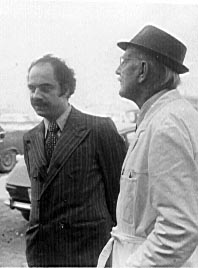
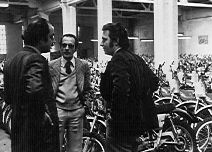

Iraj Kaboli is a
writer and literary critic. He has published a book on Persian poetry in Iran.
He is working on a new book now. He has been a representative of Bultaco
motorcycles in Iran back in 1970's. Here are pictures of that time:

Iraj Kaboli with his Alpina 350, circa 1976.

Iraj Kaboli and Senor Bulto in Barcelona, 1974. Senor Bulto was heart and soul of the Bultaco company. He designed many of the bike models himself.

Iraj Kaboli at the Bultaco factory talking with Mr. Bulto's son-in-law. Barcelona, 1974.